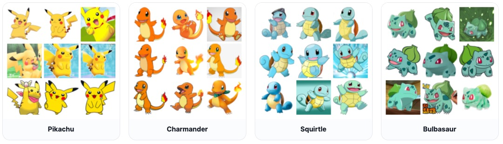

AIC313/CS378: Introduction to Generative Models
Minhyuk Sung, KAIST, Fall 2026
FastGen Challenge
Mid-Term Evaluation Submission Due (Optional): October 31 (Saturday), 23:59 KST
Final Submission Due: November 7 (Saturday), 23:59 KST
Where to submit: KLMS
Goal
TL;DR: Your goal is to generate Pokemon images FAST!
In this challenge, you will implement and train your own image generation models. The goal is to achieve high-quality image generation with only a few sampling steps. You are encouraged to explore advanced techniques for few-step generation.
What to Do
We provide the model skeleton code and the evaluation code. Your goal is to design and implement your own image generation models, including:
- Few-step generation framework: Use an existing framework or design your own generative model.
- Model architecture: Design an effective model backbone.
- Other training details: Choose data augmentation, learning rate, optimizer, and other training settings.
Specifically, your tasks are as follows:
-
Implementing Your Own Models
- You may modify the provided code (
model.py) and add new files if necessary. - You must implement the following two models used by the evaluation code:
class ModelOneNFE(Model): Model for 1-NFE generationclass ModelFewNFE(Model): Model for few-NFE generation
- DO NOT modify the base class
class Model(nn.Module).
- You may modify the provided code (
-
Training the Models
- You may freely use your own training pipeline, including model training and dataset preparation.
- You may train the two models (
ModelOneNFEandModelFewNFE) separately or let them share weights. You may also train auxiliary networks (e.g., a teacher model for distillation) from scratch, as long as they are not used at sampling time. - You can design your own model, but there are some restrictions:
- Each model must have fewer than 100M parameters.
- Parameters are counted with the provided utility in
src/utils.pyon the model as loaded for sampling. Every learned network used at sampling time counts toward this budget; networks used only during training (e.g., a teacher) do not.
- Parameters are counted with the provided utility in
- The peak VRAM while training the model must be less than 20 GB (the size of the vGPU provided through KCLOUD).
- The use of any pretrained model is prohibited. Everything must be trained from scratch on the provided training split. (The Inception network inside the provided FID evaluation code is the only exception.)
- Each model must have fewer than 100M parameters.
-
Sampling Images
- You should implement the
Model.sample()method insidemodel.pyfor each model within the pre-defined NFE limit.ModelOneNFE.sample()must use exactly 1 NFE.ModelFewNFE.sample()may use any number of NFEs up to 4 (i.e., 2, 3, or 4).
- NFE: Number of Function Evaluations (= Sampling Steps).
- Any execution of any part of the trained model backbone counts as 1 NFE.
- Any other learned network evaluated during sampling (e.g., a refiner or decoder) also counts as 1 NFE per evaluation, and its parameters count toward the 60M budget.
- Check out the Recommended Readings section, but you are not limited to implementing one of the algorithms introduced in those papers; they are provided only as references.
- You should implement the
Important Notes
PLEASE READ THE FOLLOWING CAREFULLY! Any violation of the rules or failure to properly cite existing code, models, or papers used in the project in your write-up will result in a zero score.
- DO NOT use any pretrained model. You must train the model from scratch.
- DO NOT modify the provided files marked as
DO NOT modifyin the Codebase Structure (dataset.py,download_dataset.py,evaluate.py,src/utils.py, and the data split files). These are kept fixed to ensure consistent evaluation across all submissions. - DO NOT modify
class Model(nn.Module)inmodel.py. - DO NOT use the validation split for training. Only the training split is allowed for training your model. TAs may inspect your training code and data pipeline to verify this.
- You are allowed to use open-source implementations, as long as they are clearly mentioned and cited in your write-up.
Dataset
You are required to use the Pokemon Generation One image dataset for training and evaluation. It consists of 20,099 images across 151 Pokemon categories.

- We will provide the training / validation split for the dataset.
- Training set: 17,079 images
- Validation set: 151 categories × 20 = 3,020 images
- You are only allowed to use the training split for training your model. The validation split will be used for the evaluation.
- We use 64×64 down-sampled images for computation efficiency.
You do not need to download the dataset yourself. The base code includes a script (download_dataset.py) that automatically downloads the dataset.
Codebase Structure
AIC313-Project-FastGen/
├── model.py # NFE-specific model classes (students SHOULD modify subclasses)
├── dataset.py # Pokemon dataset and DataLoader API (provided, DO NOT modify)
├── download_dataset.py # Kaggle dataset download utility (provided, DO NOT modify)
├── evaluate.py # Sample generation and FID evaluation (provided, DO NOT modify)
├── src/
│ ├── __init__.py
│ └── utils.py # Parameter counting utilities (provided, DO NOT modify)
└── data/
└── pokemon-generation-one-22k/
├── train_split.txt # Fixed training split (provided, DO NOT modify)
├── val_split.txt # Fixed validation split (provided, DO NOT modify)
└── category_to_id.json # Fixed category-to-ID mapping (provided, DO NOT modify)
- DO NOT modify: Files that must be kept as-is (for fair comparison).
- SHOULD modify: Main files for implementing your solution (
model.py). - You are also free to add your own files and codes. Note that the base code does not include a training script, so you should write your own (e.g.,
train.py). - Use the TA-provided
requirements.txtas the reference for the TAs' evaluation environment. If your code needs additional packages, list them in therequirements.txtof your submission.
Further details are provided in the README.md of the base code.
Evaluation
This is a team-based competition. The performance of your image generative models will be evaluated quantitatively using Fréchet Inception Distance (FID) scores at NFE = 1 and NFE ≤ 4. The validation split will be used as the reference set for FID.
- You may compute FID yourself, but TA-measured scores are official.
- TAs will run your code as-is in their environment. Submissions that fail to run are scored as zero for the corresponding metric.
- Mid-term evaluation results will be published on the leaderboard.
- At the mid-term evaluation, the top-1 submission above the TAs' result earns bonus credit.
Final grading will be determined relative to the best score achieved for each metric. You can get up to 20 points from the FastGen project: up to 10 points for one-NFE and 10 points for few-NFE. For each NFE setting, points are assigned as follows:
Bonus points
| When | Team | Bonus |
|---|---|---|
| Mid-term evaluation | 1st | +0.5 |
| Final evaluation | 1st | +1.0 |
| Final evaluation | 2nd, 3rd | +0.5 |
At the final evaluation, the top three teams for each evaluation setting receive bonus points. Teams receiving bonus points in the final evaluation must present their work in class on November 16 (Monday) to receive them.
Mid-Term Evaluation Submission (Optional)
The purpose of the mid-term evaluation is to provide feedback on your team's standing relative to other teams. Participation is optional, but the top-1 submission that outperforms the TA baseline will earn bonus credit toward the final grade.
- Due: October 31 (Saturday), 23:59 KST (one week before the final submission)
- What to submit
- Self-contained source code
- Your submission must include the complete codebase.
- TAs will run your code in their environment with no changes.
- Model checkpoints
- Checkpoint path:
./checkpoints/one_nfe.ckptand./checkpoints/few_nfe.ckpt - TAs will load them from these paths. Different paths will be FAILED.
- If your model needs any configuration files to be loaded (e.g., architecture hyperparameters), include them in the submission and make sure
model.pyreads them without any manual step.
- Checkpoint path:
- Self-contained source code
- Evaluation
- The FID results will be published on the leaderboard.
- We will provide the TAs' FID scores as a baseline.
- The top-1 submission that outperforms the TA baseline will earn bonus credit.
Example of Mid-Term Submission
team_{team-id:0>2}/ # e.g. team_02
├── model.py # ModelOneNFE, ModelFewNFE, and Model
├── dataset.py # Provided dataset/DataLoader interface
├── download_dataset.py # Provided dataset downloader
├── evaluate.py # Provided evaluation entry point
├── src/
│ ├── __init__.py
│ └── utils.py # Provided parameter-counting utilities
├── requirements.txt
├── checkpoints/
│ ├── one_nfe.ckpt # REQUIRED
│ └── few_nfe.ckpt # REQUIRED
└── <all additional files> # Include every file you implemented (e.g., your training script)
Final Submission
- Due: November 7 (Saturday), 23:59 KST
- What to submit:
- Self-contained source code (same as the mid-term evaluation submission)
- Model checkpoints (same as the mid-term evaluation submission)
- 2-page write-up
- No template provided.
- Maximum of two A4 pages, excluding references.
- All of the following must be included:
- Technical details: A one-paragraph description of your few-step generation implementation.
- Training details: Training logs (e.g., training loss curves), and total training time.
- Qualitative evidence: 8 sample images from the early training phases.
- Citations: All external code and papers used must be properly cited.
- Missing any of these items will result in a penalty.
- If the write-up exceeds two pages, any content beyond the second page will be ignored, which may lead to missing required items.
- Bonus: The top three teams for each evaluation setting receive bonus points (see Evaluation). Teams receiving bonus points must present their work in class on November 16 (Monday).
Self-Evaluation Checklist
Before submitting, please check the following:
- [ ] Use the TA-provided
requirements.txtto check compatibility. - [ ] Each model has fewer than 100M parameters (check with
src/utils.py). - [ ] Code runs end-to-end (Train → Sample → Evaluate) without errors.
- [ ] Both checkpoint paths are correct (
./checkpoints/one_nfe.ckpt,./checkpoints/few_nfe.ckpt). - [ ] Citations are ready: all external code/papers are cited in the final write-up.
Compute Resources (KCLOUD)
- We provide each student with a 20GB NVIDIA A100 vGPU through KCLOUD.
- The information required to access KCLOUD has been sent to each student via email.
- You should connect to the provided instance after establishing a connection to SSLVPN (KCloudVPN).
- macOS: Download and install the client from apple.secuwiz.co.kr/u20_mac_down.html, enter
https://kcloudvpn.kaist.ac.krin the URL field, and log in with your KAIST ID / PW. - Windows: Open https://kcloudvpn.kaist.ac.kr (or
https://192.249.18.254) in your browser, download and install the client, re-open the browser, and log in with your KAIST ID / PW.
- macOS: Download and install the client from apple.secuwiz.co.kr/u20_mac_down.html, enter
- After the VPN connection is established, connect to your VM via SSH using the NAT IP and the password given in the email.
Grading
There is no late day. Submit on time.
Late submission: Zero score.
Missing any required item in the final submission (code, checkpoints, write-up): Zero score.
Missing items in the write-up: 10% penalty per missing item.
Recommended Readings
[1] Song et al., Consistency Models, ICML 2023.
[2] Kim et al., Consistency Trajectory Models: Learning Probability Flow ODE Trajectory of Diffusion, ICLR 2024.
[3] Liu et al., Flow Straight and Fast: Learning to Generate and Transfer Data with Rectified Flow, ICLR 2023.
[4] Frans et al., One Step Diffusion via Shortcut Models, ICLR 2025.
[5] Tong et al., Learning to Discretize Denoising Diffusion ODEs, ICLR 2025.